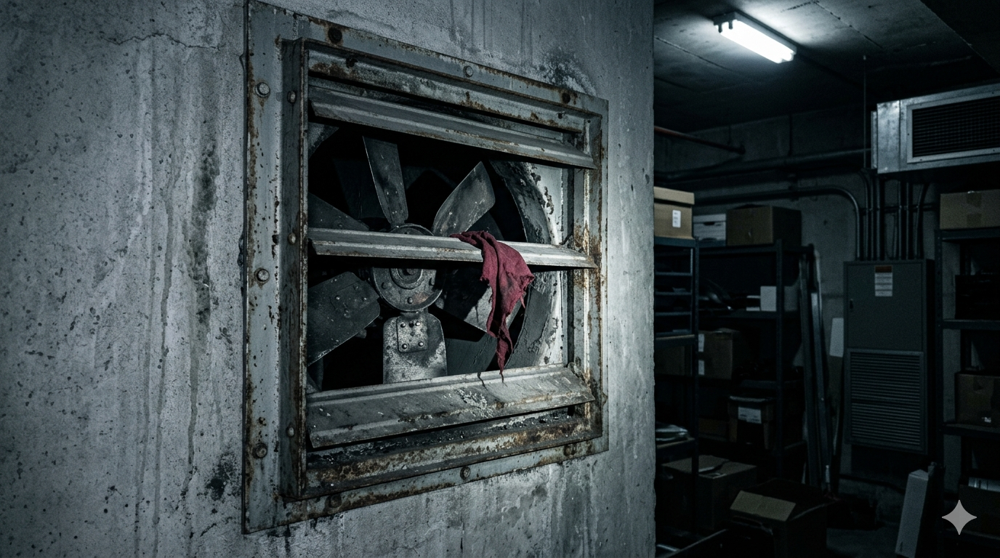

图片未找到
请将图片放入 ../media/hidden_vent_0315.jpg
请将图片放入 ../media/hidden_vent_0315.jpg
📸 文件名：DM_B2_Ventilation_20240315_0312.jpg
📅 时间戳：2024-03-15 03:12:47 AM
📍 地点：B2层排风口
⚠️ 该通风图在3月15日凌晨被发现异常。声源不明。
文件名：
IMG_0315.jpg
拍摄地点：
13F 排风井外侧
拍摄时间：
03:15
文件大小：
1.8 MB
赵宇的临时备注
布料颜色和采访那天玻璃里的人一样。
风扇里面一直有拖东西的声音。
风扇里面一直有拖东西的声音。
系统提示：这些隐藏素材可能提示了更多关于赵宇的线索。你可能需要访问他的私密文件夹…